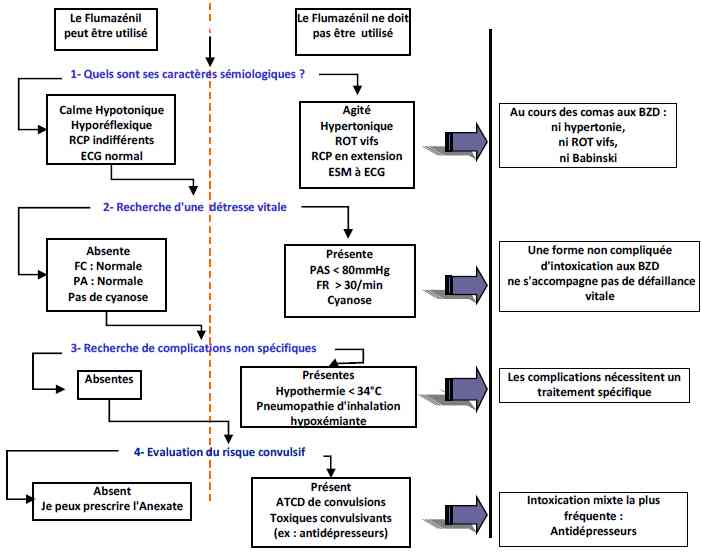

Bienvenue Sur Medical Education
Intoxication : benzodiazépines
Spécialité : pediatrie / toxicologie /
Points importants
-
L'intoxication aiguë pure aux BZD et autres anxiolytiques est rare, sauf chez l'enfant ou la personne âgée
-
Les BZD sont très souvent associées à d'autres psychotropes ou à l'alcool au cours des auto-intoxications aiguës médicamenteuses
-
Les troubles respiratoires obstructifs secondaires à l'hypotonie des voies aériennes supérieures en font la gravité
-
Le flumazénil (Anexate®) n'est indiqué que lorsque le coma est calme, hypotonique avec tous les signes compatibles pour une intoxication isolée au BZD, sans complication et sans modification de l'ECG
Présentation clinique / CIMU
SIGNES FONCTIONNELS
-
Pas de signes fonctionnels généraux ou spécifiques
CONTEXTE
Présentation clinique / CIMU
SIGNES FONCTIONNELS
- Pas de signes fonctionnels généraux ou spécifiques
CONTEXTE
Terrain
- Adulte (association fréquente)
- Enfants ou personnes âgées (possibilité de BZD seules)
Antécédents
- Recherche d'un syndrome anxio-dépressif
Facteurs de risque
- Terrain : Personnes âgées, insuffisant respiratoire chronique, insuffisant hépatique
- Association avec alcool, opiacés ou autres psychotropes
Circonstances de survenue
- Ingestion volontaire : souvent doses ingérées importantes
- Surdosage accidentelle : doses ingérées le plus souvent modérées
EXAMEN CLINIQUE
Neurologique
- Trouble de la vigilance allant de la somnolence jusqu'au coma profond
- Coma sans signe de localisation neurologique
- Syndrome de myorelaxation : coma calme, hypotonique, hyporéflexique
- Pupilles habituellement intermédiaires et réactives, parfois en myosis peu serré (une mydriase ou un myosis punctiforme doit faire évoquer d'autres toxiques)
Respiratoire
- Ronflements
- Hypopnées ou apnées obstructives du fait de l'hypotonie des muscles dilatateurs des VAS
- Pneumopathies d'inhalation : fréquentes si coma profond
- Atélectasies de posture : fréquentes si coma de découverte tardive
Cardio-vasculaires
- Rares voire absents si BZD prédominantes
- Si présents : rechercher une complication intercurrente ou une association avec d'autres toxiques à tropisme cardio-vasculaire
EXAMENS PARACLINIQUES SIMPLES
ECG
- Fait partie intégrante de l'examen clinique devant une suspicion d'intoxication aiguë médicamenteuse
- Pas de modification ECG si BZD
Glycémie capillaire
- Indispensable devant tout trouble de la conscience
- Absence d'hypoglycémie si BZD
Signes paracliniques
BIOLOGIE
-
Non utile si intoxication non compliquée ou patient asymptomatique
-
Ionogramme sanguin, créatinine et CPK si coma ou point de compression musculaire et/ou rhabdomyolyse
-
NFS si suspicion de pneumopathie
-
GDS si pneumopathie ou intubation et ventilation mécanique
-
Bilan hépatique si coma ou terrain alcoolique
IMAGERIE
-
Radio de thorax si coma, suspicion de pneumopathie ou intubation et ventilation mécanique
DOSAGES TOXICOLOGIQUES
-
Recherches qualitatives ou semi quantitatives des BZD, rendus en nombre de croix (attention : BZD positives à dose thérapeutique)
-
Non utiles pour le diagnostic, la surveillance ou le traitement
-
Utiles sur le plan médico-légal en cas de soumission médicamenteuse
-
Les anxiolytiques apparentés aux BZD, Zolpidem (Stilnox®) et Zopicline (Imovane®) ne sont pas détectés par les recherches qualitatives, mais leur dosage quantitatif est possible
Diagnostic différentiel
D'UN COMA CALME
Diagnostic différentiel
D'UN COMA CALME
Causes métaboliques
- Hypoglycémie
- Hyponatrémie
- Encéphalopathie hépatique
- Myxoedème
Lésions du SNC
- AVC
- HSA
- Coma post-critique (état de mal épileptique)
Autres toxiques
- Alcool
- Barbituriques
- Méprobamates
Traitement
STABILISATION INITIALE
-
Libération des VAS et PLS si coma
-
Oxygène si SpO2 < 95%
-
Voie veineuse si trouble de la conscience et/ou troubles respiratoires
-
Intubation et ventilation mécanique si coma profond non amélioré par le flumazénil ou si complications sévères (pneumopathie hypoxémiante, hypothermie profonde)
SUIVI DU TRAITEMENT
Décontamination digestive
- Lavage gastrique ne doit plus être pratiqué
- Charbon activé si délai ingestion < 1 h et dose potentiellement toxique et patient encore asymptomatique
Flumazénil (Anexate®)
- Antagoniste spécifique des BZD
- Utilisation diagnostique ou thérapeutique après un raisonnement clinique rigoureux
 _824 Algorithme Arbre décisionnel pour la prescription du flumazénil devant une suspicion de coma toxique
- Dose de charge par titration de 0,1 mg toutes les 2 min jusqu'à obtention d'un réveil calme et/ou une amélioration des troubles respiratoires obstructif
- Ne pas faire de stimulation nociceptive pour évaluer l'efficacité du flumazénil, car risque de réveil brutal et violent et syndrome de sevrage aigu
- Ne pas dépasser une dose totale de 1 mg (en l'absence d'effet, le coma n'est pas dû aux seules BZD)
- Dose d'entretien : commencer par la dose de charge totale en perfusion horaire (ex. : patient réveillé par 0,4 mg ; dose d'entretien : 0,4 mg/h)
- Durée du traitement d'entretien difficile à prévoir : elle dépend du patient (prolongé chez les personnes âgés, souvent < 24 h chez l'adulte sain), de la dose et de la demi-vie de la BZD ingérée
MEDICAMENTS
- Flumazénil (Anexate®) : dose de charge : 0,1 mg toutes les 2 min jusqu'à la dose efficace ayant entraîné un réveil calme, puis dose d'entretien en IVSE (commencer par la dose de charge totale efficace par heure)
- Charbon activé (carbomix 1 à 2 g/Kg jusqu'à 90 g dans 250 mL d'eau)
Surveillance
CLINIQUE
-
Conscience, FR, perméabilité des VAS, SpO2
-
Perméabilité de la voie veineuse en cas de perfusion de flumazénil
Devenir / orientation
EN PREHOSPITALIER
-
Transport aux Urgences pour surveillance si aucun signe de gravité
-
Transport en Unité de Soins Intensifs ou Réanimation si signe de gravité
EN INTRAHOSPITALIER
Devenir / orientation
EN PREHOSPITALIER
- Transport aux Urgences pour surveillance si aucun signe de gravité
- Transport en Unité de Soins Intensifs ou Réanimation si signe de gravité
EN INTRAHOSPITALIER
Critères d'admission en réanimation
- Coma non réversible par le flumazénil
- Pneumopathie hypoxémique
- Hypothermie sévère (< 32°C)
CRITERES DE SORTIE
- Absence de symptômes après au minimum 8 heures de surveillance
- Evaluation psychiatrique obligatoire pour toute tentative de suicide
ORDONNANCE DE SORTIE
- Discuter la reprise des traitements habituels par les psychotropes y compris BZD (prévention des phénomènes de sevrage, notamment aux BZD en cas de prise prolongée)
RECOMMANDATIONS DE SORTIE
- Informer entourage ou famille si sortie à domicile au décours d'une tentative de suicide
- Accompagnement du patient souhaité si sortie à domicile au décours d'une tentative de suicide
Mécanisme / description
METABOLISME
-
Absorption digestive rapide et complète, distribution rapide au niveau du cerveau
-
Métabolisme hépatique caractérisé par la production de nombreux métabolites actifs
-
Elimination rénale
PHARMACODYNAMIE
-
Les BZD et anxiolytiques apparentés ont des effets anxiolytiques, sédatifs, hypnotiques, myorelaxants et anticonvulsivants
-
Le GABA (acide gamma-aminobutyrique) est l'un des principaux neurotransmetteurs inhibiteurs du système nerveux central, il est couplé aux récepteurs des BZD
-
En se fixant sur leur récepteur, les BZD exercent leur effet par activation du GABA
Bibliographie
-
Gueye P.N. Intoxication aiguë par les sédatifs et myorelaxants.. In : Traité de Réanimation Médicale : Dhainault JF et Perret P. Masson, Paris 1999, p 455-456
-
Gueye P.N., Taboulet P., Métadier de Saint Denis D. Utilisation rationnelle du flumazénil devant un trouble de la conscience chez l'adulte In : Réanimation des intoxications aiguës, : F. Baud, Masson, Paris 1995, p 79-87
Bibliographie
- Gueye P.N. Intoxication aiguë par les sédatifs et myorelaxants.. In : Traité de Réanimation Médicale : Dhainault JF et Perret P. Masson, Paris 1999, p 455-456
- Gueye P.N., Taboulet P., Métadier de Saint Denis D. Utilisation rationnelle du flumazénil devant un trouble de la conscience chez l'adulte In : Réanimation des intoxications aiguës, : F. Baud, Masson, Paris 1995, p 79-87
Auteur(s) : Papa GUEYE